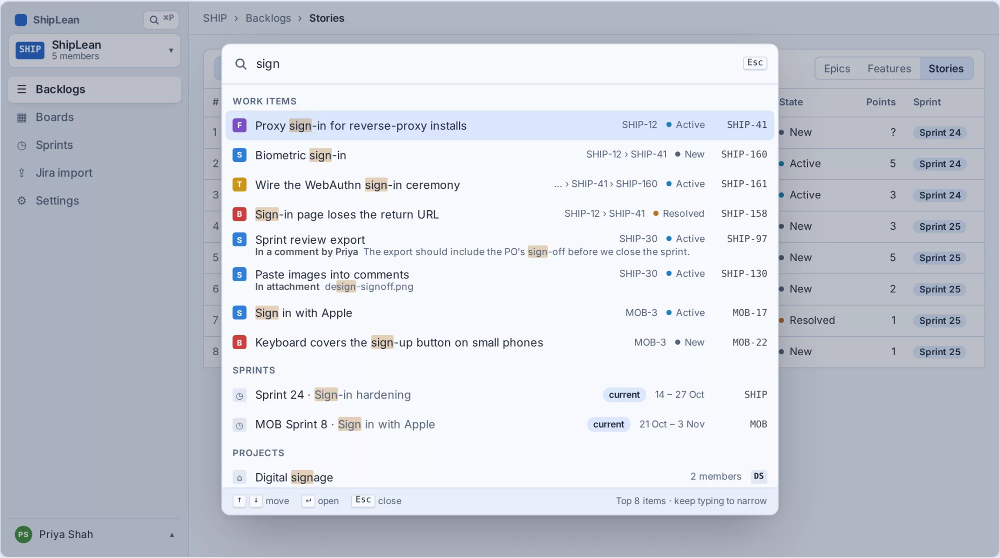
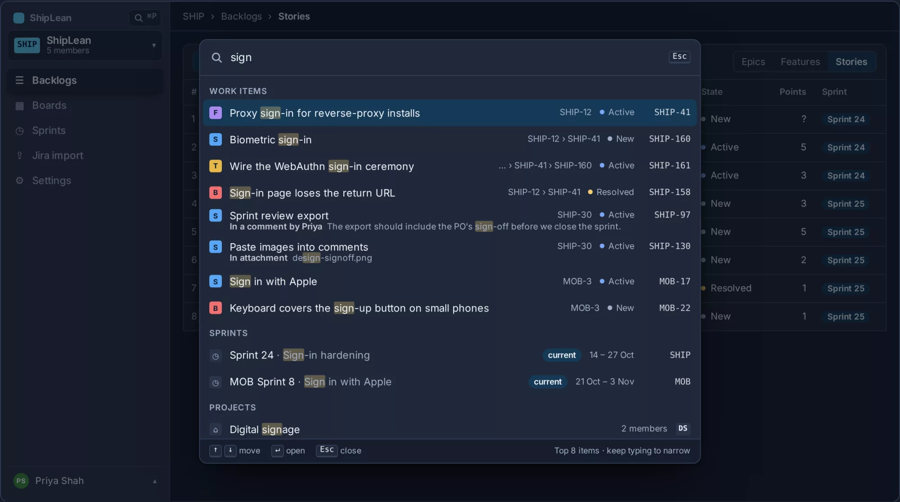

AI-native project management.
built for humans and agents.
ShipLean is a free, open-source planning tool you host yourself. Rank a backlog, run a Kanban board, plan sprints or mix them, and see which sprint each backlog item is likely to land in. Connect Claude Code, Cursor or Claude Desktop over MCP and your agents can plan, pick up and report work on the same backlog, with their name on every change they make.


Plan a sprint in minutes.
An agent can take on the slow parts when you want it to. It can break features into stories, point out anything without an estimate and suggest a sprint sized to what the team usually delivers. You decide what goes in, and the whole team sees it at once. ShipLean is free, open source and runs on your own server.
Kanban or Scrum, your way
A ranked backlog, Kanban boards, sprints and a sprint taskboard. Name your own states, set up columns and WIP limits, and run the process your team already uses.
Forecasts and reports
See which sprint each backlog item is likely to land in, based on the team's recent velocity. Burndown, velocity and history come from every change, so the numbers always add up.
Live for the whole team
Changes show up for everyone as they happen, with no refresh. See who else is on the same screen, and follow every work item from idea to done.
Agents work from the same backlog as people.
ShipLean has an MCP server. Connect Claude Code, Cursor or Claude Desktop with one command. An agent can then read and update the same backlog, boards and sprints as the team, and its name is on every revision and comment it writes.
Break SHIP-240 down so three agents can build it in parallel.planning_guideguide + 7 templates + 2 lessons from the last retrocapture_planpreview · 1 feature, 6 stories, 23 tasks · 1 warning, 0 errorscapture_planapplied the previewed plan · tags wave:1 lane:F model ctx:55k Planned. Wave 0.1 can start now. Wave 1 has three lanes, so three leads run at the same time. Wave 2 starts when all three are done. Start lane F.pick_upSHIP-247 moved to In progress · Claude Code, for Alexget_briefSHIP-248: common brief + task brief + branch feat/240 + report templatereport_taskSHIP-248 done · 3 commits · PR #312 linked · 1 left undone, now SHIP-271plan_statuswave 1 · F 2/5 done · A 1/7 · L 0/7 · wave 2 not startable yet


You approve the agent in the browser, so it never sees your password. It starts with read and write. The first time a tool needs plan, ShipLean sends it back to the consent page. Revoke it from your profile; a password change disconnects every agent at once.
Connect in one line
Add ShipLean to your agent and approve it in the browser. Any MCP client that supports OAuth can connect, and you can revoke access at any time.
Context and skills, built in
ShipLean gives agents the method as well as the tools: how to break work down, what good looks like, and what your team learned in its last retros.
Parallel by design
Break a feature into pieces that several agents can build at the same time. Each agent gets its own brief, reports back when it is done, and everyone sees progress on the board.
You stay in control
Agents show you big changes before they make them, and only get the access you approve. Every change records which agent made it and who it was working for.
Orient
- list_projects
- search
- get_work_item
Capture
- capture_work
- break_down
- refine_work_item
- comment
- link
Work
- find_work_to_pick_up
- pick_up
- update_progress
- hand_back
Sprint
- create_sprint
- plan_sprint
- end_sprint
Backlog
- review_backlog
- sprint_review
- move_to_sprint
- reorder
Status
- whats_changed_since
- feature_progress
- sprint_status
PlanningNew
- planning_guide
- capture_plan
- get_brief
- report_task
- plan_status
- /plan_feature
26 tools and one prompt behind one URL. ShipLean links a GitHub or GitLab pull request to each story named in its title or branch, and closes the story when the pull request merges. The search tool is the same AI search people get with ⌘P. Next: a flash on the board when an agent moves a card, the same as for a teammate's drag.
One plan, seen every way you need it.
Plan on the backlog, run the work on the board, track the sprint and dig into any item. Every view shows the same live work, so the whole team is looking at the same picture.
Rank the backlog, top to bottom
One ordered list per level, Epics, Features or Stories, with the sprint each item is in.
- New work goes in at the top
- Show parents to work by Feature
- A Criteria filter and your own columns


A Kanban board with your own columns and states
Columns map to states for each type, so one board holds stories and bugs that move differently.
- WIP limits that warn without blocking
- Split columns and a definition of done
- Swimlanes and card style rules
Plan the next few sprints in one list
The current sprint, the future sprints and the backlog, stacked in one ranked list.
- Drag between sprints, or Alt+↑/↓ from the keyboard
- Committed against team capacity on every sprint
- A forecast line for each sprint the backlog reaches


Run the sprint on a live taskboard
One row per story or bug, one column per task state, updated as the team works.
- Group by stories or by people
- Pick up a task in one click
- Finished stories fold down to a single line


Everything about one story on one page
Description, acceptance criteria, tasks, discussion, links and the full history of every change.
- Acceptance criteria as a checklist
- Tasks and comments save straight away
- If someone saved first, see what they changed


Capacity as a team total
Each person enters their own points. ShipLean compares only the team total with the sprint.
- A note for the low weeks, like Off Thu and Fri
- A sense check against velocity
- Copy last sprint's numbers in one click


Velocity from what really happened
Every sprint with its goal, capacity, committed and completed points, newest first.
- Committed vs completed for the last five sprints
- A new sprint with sensible defaults
- The form refuses overlapping dates


Your own states for each type
Rename, add and reorder the states of each type. Colours and totals follow the category, so a rename never breaks a report.
- Custom states per type, like Triaged or In review
- A project key that never changes
- Members, working days and the velocity window


Agile planning, from estimate to ship.
Everything a team does between an idea and a release, in one place. Rank and estimate the backlog, plan sprints around what the team usually delivers, track the work on a board and ship, using as much or as little of it as suits you. People and agents can work from the same plan, so it keeps up as the work moves.
Boards that fit how you work.
Shape each board around your team's flow. Add the columns you need, set limits so work doesn't pile up, and give urgent work its own lane. Cards move for everyone as they happen, and taking a card is one drag.
AI search that knows what you mean.
Press ⌘P, or Ctrl+P, on any screen and start typing. Semantic search built on embeddings matches meaning as well as exact words, across titles, descriptions, comments and attachments, closed work included. Work items, sprints and projects come back in groups. Your agents use the same AI search over MCP, so people and agents find the same things.


Bring your Jira project with you.
Move a Jira project into ShipLean with its history, comments and sprints. You see how everything will come across before anything is imported, and your Jira stays exactly as it was.


Bring your own sign‑in.
Use the sign-in your company already has. Put ShipLean behind your identity proxy, such as Cloudflare Access, Authelia or Authentik, and people arrive signed in with their existing account. Nobody needs another password, and new people get an account on their first visit.
Agents still connect with your approval, and admins can still turn anyone off.
Hand a story to a coding agent.
Choose which states start an agent, such as Ready for agent. When someone moves a story there, ShipLean sends it to your cloud coding agent with its context and repository. The agent's plan, progress and pull request show up on the story as it works. Comment to steer it, or stop it at any time.
Only a person moving a story starts an agent. Imports and bulk changes never do, and each agent sees only the work it was given.
Self-hosted
Run it on your own server, with every team's projects in one place.
See who's here
See who else is looking at the same screen, and watch their changes arrive.
Your own workflow
Name the states each project needs, and reports still add up.
Every change kept
Every item keeps its full history, so reports show what really happened.
Common questions.
Is ShipLean free?
Yes. ShipLean is free and open source, and you host it yourself. The docs show how to install it.
Does it run on my own server?
Yes. ShipLean is self-hosted, and every team's projects can live on one server you control. See the self-hosted page for what you need.
Does it import from Jira?
Yes. You can move a Jira project into ShipLean with its history, comments and sprints. You review how everything will come across before anything is imported, and your Jira stays exactly as it was.
Which agents can connect?
Claude Code, Claude Desktop, Cursor and any other MCP client that supports OAuth. You approve each agent in the browser and can revoke it at any time.
Built in the open.
Free to host today.
ShipLean is free and open source. Version 1 is out, with agents over MCP and bring-your-own sign-in. Pull the container image and run it on your own server, and follow the project on GitHub to see each change land.
- DesignDoneEvery v1 screen, light and dark
- Version 1DoneBacklogs, boards, sprints, the taskboard, work items, settings and Jira import
- Agents over MCPDone26 tools, browser consent, PR webhooks and a planning guide for agents working in parallel
- Bring your own sign-inDoneTrust the identity proxy you already run
- Open source releaseDoneFree to download and host yourself
- Cloud agent integrationDoneMove a story to start a coding agent, and follow its work on the story
- NextBuildingRoadmaps and delivery plans across teams